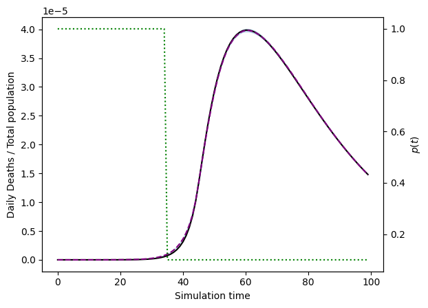
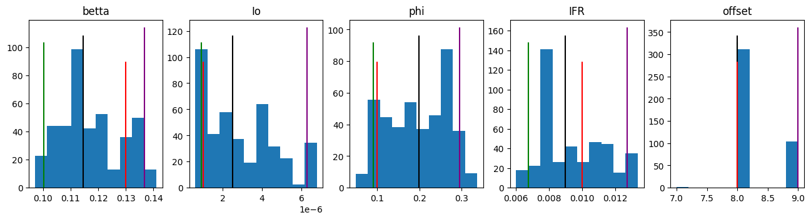

MY MODEL
This examples follows the model exposed in my Physics Undergraduate Thesis Project (2021-2022) whose code can be found GitHub repository.
The main equations of the model are the following:
Where
The configuration could be:
model = {
"simulation": {
"n_simulations": 100000,
"n_executions": 1,
"n_steps": 100
},
"compartments": {
"Sh": { "initial_value": 0 },
"S": {
"initial_value": 1,
"minus_compartments": "I"
},
"E": { "initial_value": 0 },
"I": {
"initial_value": "Io",
},
"R": { "initial_value": 0 },
"Pd": { "initial_value": 0 },
"D": { "initial_value": 0 },
},
"params": {
"betta": {
"min": 0.01,
"max": 0.3,
"min_limit": 0.01, // (1)
"max_limit": 0.3
},
"Io": {
"min": 1e-8,
"max": 1e-5,
"min_limit": 0,
"max_limit": 1e-4
},
"phi": {
"min": 0,
"max": 0.5,
"min_limit": 0,
"max_limit": 1
},
"IFR": {
"min":0.006,
"max":0.014,
"min_limit": 0.006,
"max_limit": 0.014
},
"offset": {
"type": "int", // (2)
"min":5,
"max":10,
"min_limit": 0,
"max_limit": 10
}
},
"fixed_params": {
"K_active": 12.4,
"K_lockdown": 2.4,
"sigma": 3.4,
"mu": 1/4.2,
"eta":1/5.2,
"xi":1/10,
},
"reference": {
"compartments" : ["D"],
"offset": "offset" // (3)
},
"results": {
"save_percentage": 0.5
}
}
min_limitandmax_limitare the absolute limits in the automatic adjustment- This
offsetparameter will be used as an offset between the simulated data and the reference data - An offset can be applied to the reference while comparing it with the simulation data. Can be an interger or a parameter name defined in
params
Now we need to define the evolution function of the system and assign it to the model. In this case the evolution function is a lot more complicated than in previous examples.
Note: In case of complex problems like this it may be needed to write
[:]on values assignation.
import compartmental
compartmental.use_numpy()
# compartmental.use_cupy() # For GPU usage
MyModel = compartmental.GenericModel(model)
def evolve(m, time, p_active, *args, **kargs):
ST = m.S + m.Sh
sh = (1 - m.I) ** (m.sigma - 1)
P_infection_active = 1- (1- m.betta * m.I) ** m.K_active
P_infection_lockdown = 1- (1- m.betta * m.I) ** m.K_lockdown
P_infection = p_active[time] * P_infection_active + (1-p_active[time]) * (1-sh*(1-m.phi)) * P_infection_lockdown
m.Sh[:] = ST * (1-p_active[time])*sh*(1-m.phi)
delta_S = ST * P_infection
m.S[:] = (ST - m.Sh) - delta_S
m.D[:] = m.xi * m.Pd
m.R[:] = m.mu * (1-m.IFR) * m.I + m.R
m.Pd[:] = m.mu * m.IFR * m.I + (1-m.xi) * m.Pd
m.I[:] = m.eta * m.E + (1- m.mu) * m.I
m.E[:] = delta_S + (1-m.eta) * m.E
MyModel.evolve = evolve
For this example we will use a p_active defined as follows:
Once the model is defined and the evolution function is set we can create a trajectory of the model. We can set specific values for the random parameters as follows:
sample, sample_params = compartmental.util.get_model_sample_trajectory(
MyModel, p_active,
**{"betta": 0.13,
"Io": 1e-6,
"phi": 0.1,
"IFR": 0.01,
"offset": 8} # (1)
)
reference = numpy.copy(sample[MyModel.compartment_name_to_index["D"]])
offset is defined as the reference's offset in the model configuration.
Plotting the sample yields:
import matplotlib.pyplot as plt
list_of_sample_lines = []
_range = numpy.arange(model["simulation"]["n_steps"])
for s in sample:
list_of_sample_lines.append(_range)
list_of_sample_lines.append(s)
list_of_sample_lines.append('-')
sample_lines = plt.plot(*list_of_sample_lines)
for line, compartment in zip(sample_lines, model["compartments"]):
line.set_label(compartment)
plt.title("Compartments population evolution")
plt.xlabel("Time")
plt.ylabel("Population / Total")
plt.legend()
plt.show()
Now we can use the sample and try to infer the values of \(\beta\), \(Io\), \(\phi\), \(IFR\) and the offset:
ITERS = 15
# Main loop of adjustments:
# 1. Run
# 2. Read results
# 3. Compute weights
# 4. Adjuts configuration
for i in range(ITERS):
MyModel.run(reference, f"my_model{i}.data", p_active)
results = compartmental.util.load_parameters(f"my_model{i}.data")
weights = numpy.exp(-2*results[0]/numpy.min(results[0]))
compartmental.util.auto_adjust_model_params(MyModel, results, weights)
# Update for final photo with more simulations
MyModel.configuration.update({
"simulation": {
"n_simulations": 1000000,
"n_executions": 4,
"n_steps": 100
},
"results": {
"save_percentage": 0.01
}
})
MyModel.run(reference, "my_model.data", p_active)
Finnally we can plot the results:
results = compartmental.util.load_parameters("my_model.data")
weights = numpy.exp(-2*results[0]/numpy.min(results[0]))
weights /= numpy.min(weights)
percentiles = compartmental.util.get_percentiles_from_results(MyModel, results, 30, 70, weights, p_active, weights)
try:
# In case cupy is used
percentiles = percentiles.get()
sample = sample.get()
weights = weights.get()
results = results.get()
sample_params = sample_params.get()
except AttributeError:
pass
# Plot sample with a shadow of the results.
plt.figure()
plt.fill_between(numpy.arange(percentiles.shape[2]), percentiles[0,0], percentiles[0,2], alpha=0.3)
plt.xlabel("Simulation time")
plt.ylabel("Daily Deaths / Total population")
plt.plot(reference, 'black')
plt.plot(numpy.arange(percentiles.shape[2]), percentiles[0,1], '--', color='purple')
tax = plt.twinx()
tax.plot(p_active, ':', color='green')
tax.set_ylabel(r"$p(t)$")
# Histograms with infered likelihood of the parameters
fig, *axes = plt.subplots(1, len(results)-1)
fig.set_figheight(3.5)
fig.set_figwidth(16)
for i, ax in enumerate(axes[0], 1):
_5, _50, _95 = compartmental.util.weighted_quantile(results[i], [5, 50, 95], weights)
for k, index in MyModel.param_to_index.items():
if index == i-1:
ax.set_title(k)
ax.hist(results[i], weights=weights)
ax.vlines(_5, *ax.get_ylim(), 'green')
ax.vlines(_50, *ax.get_ylim(), 'black')
ax.vlines(_95, *ax.get_ylim(), 'purple')
ax.vlines(sample_params[i-1], ax.get_ylim()[0], ax.get_ylim()[1]*3/4, 'red')
plt.show()
 